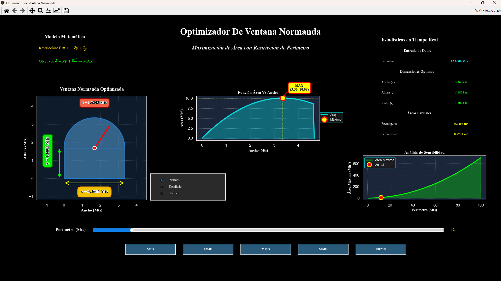

Calcula y visualiza las dimensiones exactas de una ventana normanda que maximizan el área disponible dado un perímetro fijo.
Dado un perímetro fijo P, se busca la distribución óptima entre ancho y alto que produce el área máxima posible.

| PLATAFORMA | Windows 10 / 11 |
| DISTRIBUCIÓN | Ejecutable standalone |
| LENGUAJE | Python 3.11 |
| LIBRERÍAS | Matplotlib, NumPy, SciPy, PyQt5 |
| RESOLUCIÓN REC. | 1920 × 1080 · Escala 100–150 % |
| AUTOR | Carlos Gabriel Magallanes López |
| FECHA DESARROLLO | Diciembre 2025 |
| LICENCIA | Propietario · Uso personal y educativo |